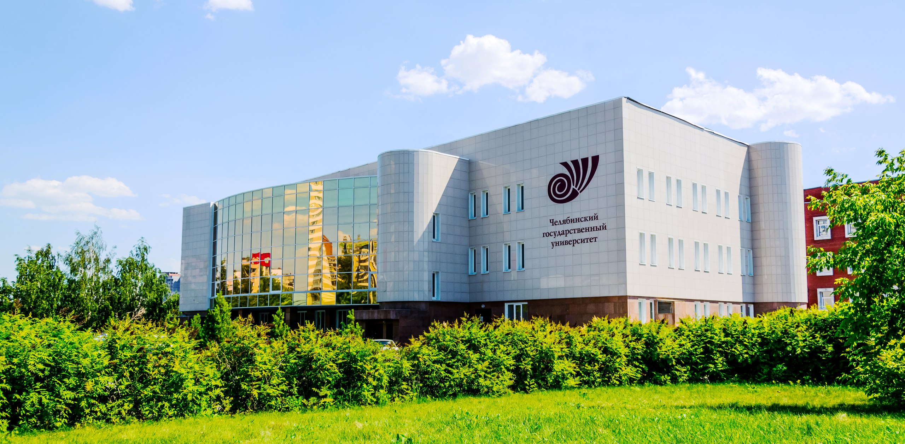

Челябинский государственный университет
ЧелГУ


Международная научно-практическая конференция
«ЛИЧНОСТЬ В НОРМЕ И ПАТОЛОГИИ»
22-23 апреля 2021 г.
Главная
Несмотря на активное изучение феномена личности отечественными и зарубежными психологами, проблема ее развития остается открытой, поскольку представления о развитии личности и границах «норма – патология» имеют тенденцию меняться как в исторической, так
и в культурной перспективе, пересматриваться и переосмысливаться. Эта проблема представляет интерес как в теоретическом отношении, так и в своем практическом применении.
Цель
Обсуждение современных базовых представлений о личности и ее развитии в норме и патологии.
Информация
Направления:
- Развитие личности в меняющемся мире
- Психическое здоровье личности в условиях глобальных вызовов
- Личность в образовательном пространстве
- Личность в стареющем обществе
- Личность в экономике и политике
- Развитие личности с особенными потребностями
- Личность в условиях цифровизации
- Личность и право
Участники:
К участию в конференции приглашаются ученые, преподаватели, аспиранты, докторанты, специалисты-практики, ведущие научные исследования и практическую деятельность в области психологии, психотерапии, дефектологии, социального обслуживания населения.
Форма проведения конференции:
очно-заочная.
Рабочие языки конференции:
русский, английский.
Формы работы конференции:
Пленарное и секционные заседания, мастер-классы, круглые столы.
Возможности публикации
Материалы конференции будут опубликованы в форме тезисов доклада на русском языке в сборнике материалов конференции (с присвоением ISBN, УДК, ББК и регистрацией в РИНЦ).
Требования к тезисам
Тезисы должны включать следующие элементы:
- УДК
- Фамилию Имя Отчество автора (авторов) статьи без сокращений
- Название образовательной организации, города
- Данные о научном руководителе: ученая степень, должность, инициалы и фамилия (не считается автором статьи)
- Название
- Ключевые слова (3-5 слов)
- Текст доклада
Остальные требования:
- Объём материалов: 250-500 слов
- Поля: 3 см слева, 1,5 см справа, 2 см сверху и снизу
- Шрифт: Times NewRoman (в редакторе MS Word версий 2002 и выше)
- Высота: 12 пунктов
- Междустрочный интервал: одинарный
- Отступ первой строки: 1,25 см
- Выравнивание: по ширине
- Индекс УДК: шрифт жирный в левом верхнем углу
- НАЗВАНИЕ (ЗАГОЛОВОК): шрифт жирный, заглавные буквы, печатается без переноса – по центру. Ниже через один интервал – фамилия имя, отчество автора (авторов) строчными буквами без сокращений. На следующей строке – название организации (полностью), в скобках – город. На следующей строке, с абзацного отступа – ключевые слова (5-7 слов). Далее, через один интервал, с абзацного отступа – текст доклада (выравнивание по ширине). Ссылки на литературу оформляются в тексте в круглых скобках в формате Фамилия, год. Применение подстрочных сносок не допускается.
Инструкция
Уважаемые авторы! Необходимо скачать шаблон и оформить тезисы в соответствии с требованиями и шаблоном. Заявка заполняется в режиме он-лайн, статью необходимо прикрепить к заявке.
Скачать шаблон статьи:
Программа
Программа формируется
Организационный коммитет
Л.Н. Аксеновская,
доктор психологических наук, профессор, Саратовский национальный исследовательский государственный университет им. Н.Г. Чернышевского
О.С. Дейнека,
доктор психологических наук, профессор, член-корреспондент РАЕ, Санкт-Петербургский государственный университет
И.В. Дубровина,
доктор психологических наук, профессор, член-корреспондент Российской академии образования (1995), Психологический институт РАО
С.Л. Соловьева,
доктор психологических наук, профессор, Северо-Западный государственный медицинский университет им. И.И. Мечникова
Т.С. Овчинникова,
доктор педагогических наук, Ленинградский государственный университет им. А.С. Пушкина
С.В. Духновский,
доктор психологических наук, профессор, Югорский государственный университет
В.С. Красник,
кандидат психологических наук, Центр экстренной психологической помощи "Алис", Израиль
С.А. Репин,
доктор педагогических наук, профессор, Челябинский государственный университет
Л.С. Рычкова,
доктор медицинских наук, профессор, Южно-Уральский государственный университет
И.А. Трушина,
кандидат педагогических наук, Челябинский государственный университет
М.В. Овчинников,
кандидат психологических наук, Челябинский государственный университет
С.А. Курносова,
кандидат педагогических наук, Челябинский государственный университет
Е.В. Забелина,
кандидат психологических наук, Челябинский государственный университет
В.Г. Рагозинская,
кандидат психологических наук, Челябинский государственный университет
Р. Аренас,
профессор юридической и судебной психологии, Университет Фронтера, Чили
Э. Кирхлер,
профессор экономической психологии, Университет Вены, Австрия
М.Ванг,
профессор клинической психологии, Лестерский университет, Великобритания
Место проведения конференции
ФГБОУ ВО "ЧелГУ"
ул. Братьев Кашириных, д.129
г. Челябинск
Россия
Челябинский государственный университет
Организационные взносы
Даты
Публикация тезисов в электронном сборнике - 1000 руб.
Реквизиты счета для перечисления:
ИП Корниенко Наталья Николаевна
454087, г.Челябинск, ул. Кузнецова, 5-102
Фактический адрес: 454092 г.Челябинск, ул.Кирова, 130, к.1
Т/ф (351)263-51-18, 263-19-05
ИНН 745000778210
Р/с 40802810400310002617 в ПАО «Челябинвестбанк» г.Челябинск, к/с 30101810400000000779, БИК 047501779
ОКАТО 75701000
ОКТМО 75701000
ОКОГУ 49015
ОКФС 16
ОКОПФ 5 01 02
ОКПО 0149301677
ОГРИП 306745006200014, действующая на основании Свидетельства серии 74 № 004626141 от 3 марта 2006 г
НДС не предусмотрен на основании применении патентной системы налогообложения (ПСН)
e-mail: pech-dvor@mail.ru
Паспорт серия 7500 894582 выдан 14.11.2001 УВД Металлургического района г.Челябинска
Назначение платежа: публикация статьи
Реквизиты счета для перечисления:
ИП Корниенко Наталья Николаевна
454087, г.Челябинск, ул. Кузнецова, 5-102
Фактический адрес: 454092 г.Челябинск, ул.Кирова, 130, к.1
Т/ф (351)263-51-18, 263-19-05
ИНН 745000778210
Р/с 40802810400310002617 в ПАО «Челябинвестбанк» г.Челябинск, к/с 30101810400000000779, БИК 047501779
ОКАТО 75701000
ОКТМО 75701000
ОКОГУ 49015
ОКФС 16
ОКОПФ 5 01 02
ОКПО 0149301677
ОГРИП 306745006200014, действующая на основании Свидетельства серии 74 № 004626141 от 3 марта 2006 г
НДС не предусмотрен на основании применении патентной системы налогообложения (ПСН)
e-mail: pech-dvor@mail.ru
Паспорт серия 7500 894582 выдан 14.11.2001 УВД Металлургического района г.Челябинска
Назначение платежа: публикация статьи
Оплата проезда и проживания - за счет участников
конференции.
22.04.2021
11.00 – 11.10 ОТКРЫТИЕ КОНФЕРЕНЦИИ / OPENING CEREMONY
Актовый зал (Театральный корпус) Подключиться к конференции Zoom https://us02web.zoom.us/j/8867091337 Приветственное слово ректора. Приветственное слово директора Института образования и практической психологии
ПЛЕНАРНОЕ ЗАСЕДАНИЕ / PLENARY SESSION
Актовый зал (Театральный корпус) Подключиться к конференции Zoom https://us02web.zoom.us/j/8867091337
11.00 – 11.10 ОТКРЫТИЕ КОНФЕРЕНЦИИ / OPENING CEREMONY
Актовый зал (Театральный корпус) Подключиться к конференции Zoom https://us02web.zoom.us/j/8867091337 Приветственное слово ректора. Приветственное слово директора Института образования и практической психологии
ПЛЕНАРНОЕ ЗАСЕДАНИЕ / PLENARY SESSION
Актовый зал (Театральный корпус) Подключиться к конференции Zoom https://us02web.zoom.us/j/8867091337
11.10 – 11.35 Красник В.С. / Krasnik V.S.
Состояние психического здоровья населения Израиля в период пандемии COVID-19/ Mental health status of Israel's population during the pandemic COVID-19
Состояние психического здоровья населения Израиля в период пандемии COVID-19/ Mental health status of Israel's population during the pandemic COVID-19
11.35 – 12.00 Соловьева С.Л. / Solovyova S.L.
Выживание в условиях неопределенности: на примере COVID-19 / Survival in uncertainty: on the example of COVID-19
Выживание в условиях неопределенности: на примере COVID-19 / Survival in uncertainty: on the example of COVID-19
12.00 – 12.25 Рагозинская В.Г., Козырская И.Н./ Ragozinskaya V.G., Kozyrskaya I.N.
Стрессоустойчивость будущих учителей-дефектологов до и во время пандемии COVID-19 / Stress resistance of students-defectologists before and during the COVID-19 pandemic
Стрессоустойчивость будущих учителей-дефектологов до и во время пандемии COVID-19 / Stress resistance of students-defectologists before and during the COVID-19 pandemic
12.25 – 12.50 Рычкова Л.С. / Rychkova L.S.
Мотивация деятельности волонтеров в условиях повышенной социальной напряженности, вызванной новой коронавирусной инфекцией COVID-19 / Motivation of volunteer activities in the conditions of increased social tension caused by the new coronavirus infection COVID-19
Мотивация деятельности волонтеров в условиях повышенной социальной напряженности, вызванной новой коронавирусной инфекцией COVID-19 / Motivation of volunteer activities in the conditions of increased social tension caused by the new coronavirus infection COVID-19
12.50 – 13.15 Аксеновская Л. Н. / Aksenovskaya L. N.
Ордер и дизордер: социально-психологический контекст анализа проблемы нормы и патологии / Order and disorder: socio-psychology problem analysis
Ордер и дизордер: социально-психологический контекст анализа проблемы нормы и патологии / Order and disorder: socio-psychology problem analysis
13.15 -13.40 Духновский С.В., Мищенко В., Белова Л./ Dukhnovsky S., Mishchenko V., Belova L.
Особенности профессионального самоотношения субъектов, переживающих «кризис взрослости» / Features of professional self-attitude in subjects experiencing «adulthood crisis»
Особенности профессионального самоотношения субъектов, переживающих «кризис взрослости» / Features of professional self-attitude in subjects experiencing «adulthood crisis»
13.40-14.00 КОФЕ-БРЕЙК / COFFEE BREAK
14.00-15.00 Открытая лекция / Open lecture
Проф. Эрих Кирхлер / Prof. Erich Kirchler, University of Vienna, Austria
Методы изменения экономических стимулов для борьбы с пандемией и соблюдение налоговых норм в будущем / Economic stimulus measures to cope with the pandemic and future tax compliance
Методы изменения экономических стимулов для борьбы с пандемией и соблюдение налоговых норм в будущем / Economic stimulus measures to cope with the pandemic and future tax compliance
15.00-15.30 ОБЕД / LUNCH
15.30 – 18.00
Секция он-лайн
Подключиться к конференции Zoom https://us02web.zoom.us/j/8867091337
Секция он-лайн
Подключиться к конференции Zoom https://us02web.zoom.us/j/8867091337
Андронникова О.О. /Andronnikova О.
Специфика индивидуального опыта подростков с осознанной виктимностью / Specifity of the individual experience of adolescents with realized victimhood
Специфика индивидуального опыта подростков с осознанной виктимностью / Specifity of the individual experience of adolescents with realized victimhood
Ромодина А.М., Валко Д.В., Тананин А.В. / Romodina A.M., Valko D.V., Tananin A.V.
Оценка потребностей лиц с вич-инфекцией в исправительных учреждениях/Assessment of the needs of people with hiv in correctional institutions
Оценка потребностей лиц с вич-инфекцией в исправительных учреждениях/Assessment of the needs of people with hiv in correctional institutions
Ricardo X. Pérez-Luco, Carolina A. Armijo, Alejandra Estrada, Paula A. Alarcón, Lorena S. Wenger, Sergio A. Chesta
Personality and criminal trajectories in young adults held in chilean prisons/ Личностные и криминальные особенности молодых людей, содержащихся в чилийских тюрьмах
Personality and criminal trajectories in young adults held in chilean prisons/ Личностные и криминальные особенности молодых людей, содержащихся в чилийских тюрьмах
Кадочникова И.В. /Kadochnikova I.
Особенности личностной составляющей сотрудников пенитенциарной системы / Characteristics of the personal component of employees of the penitentiary system
Особенности личностной составляющей сотрудников пенитенциарной системы / Characteristics of the personal component of employees of the penitentiary system
Овчарова Р.В. / Ovcharova R.V.
Сравнительный анализ резильентности подростков (норма, пренебрежение, правонарушение) / Comparative аnalysis of adolescence resilience (norm, neglect, delinquency)
Сравнительный анализ резильентности подростков (норма, пренебрежение, правонарушение) / Comparative аnalysis of adolescence resilience (norm, neglect, delinquency)
Халфина Р.Р., Шевчеук О. / Khalfina R.R., Shevchuk О.
Психологические особенности уровня субъективного контроля у наркоманов в подростковом возрасте / Psychological features of the level of subjective control in drug addicts in adolescence
Психологические особенности уровня субъективного контроля у наркоманов в подростковом возрасте / Psychological features of the level of subjective control in drug addicts in adolescence
Гартвик E.В. / Gartvik E.V.
Личностные особенности подростков с делинквентным поведением / Personality characteristics of adolescents with delinquent behavior
Личностные особенности подростков с делинквентным поведением / Personality characteristics of adolescents with delinquent behavior
Романова Н.М., Осокина А.С. / Romanova N.M., Osokina A.S.
Социально-психологическая типология подростков, пропавших без вести / Socio-psychological typology of teenagers missing
Социально-психологическая типология подростков, пропавших без вести / Socio-psychological typology of teenagers missing
15.30 – 19.00
Коворкинг (1 этаж)
Подключиться к конференции Zoomhttps://us02web.zoom.us/j/83493144122?pwd=S3QrTURzaVFacDJMTWJLanRVZWVjUT09 Идентификатор конференции: 834 9314 4122 Код доступа: 335801
Коворкинг (1 этаж)
Подключиться к конференции Zoomhttps://us02web.zoom.us/j/83493144122?pwd=S3QrTURzaVFacDJMTWJLanRVZWVjUT09 Идентификатор конференции: 834 9314 4122 Код доступа: 335801
Глухов П.С., Грязева-Добшининская
В.Г., Глухова В.А. / Glukhov P.S., Gryazeva-Dobshininskaya V.G., Glukhova V.A.
Мотивация достижения и толерантность к креативному персоналу у менеджеров производственных предприятий /Achievement motives and tolerance of creative personnel among managers of the industrial enterprises
Мотивация достижения и толерантность к креативному персоналу у менеджеров производственных предприятий /Achievement motives and tolerance of creative personnel among managers of the industrial enterprises
Забарин А.В. / Zabarin A.V.
Значимость конституционных прав и прогноз вероятности их нарушения как факторы протестного поведения / The significance of constitutional rights and the prediction of the likelihood of their violation as the factors of protest behavior
Значимость конституционных прав и прогноз вероятности их нарушения как факторы протестного поведения / The significance of constitutional rights and the prediction of the likelihood of their violation as the factors of protest behavior
Забелина Е.В., Артемьева В.А,, Курносова С.А. / Zabelina E.V., Artemeva V.A, Kurnosova S.A.
Особенности отношения к времени владельцев малого бизнеса / Peculiarities of attitude towards time of small businesses owners
Особенности отношения к времени владельцев малого бизнеса / Peculiarities of attitude towards time of small businesses owners
Честюнина Ю.В., Веденеева Е.В. / Chestyunina Y.V., Vedeneeva E.V.
Особенности восприятия экономической реальности пенсионеров (региональный аспект) / Characteristics of the perception of economic reality of retirees(regional aspect)
Особенности восприятия экономической реальности пенсионеров (региональный аспект) / Characteristics of the perception of economic reality of retirees(regional aspect)
Забелина Е.В., Корниенко А., Честюнина Ю.В. / Zabelina E.V., Korniyenko A., Chestyunina Y.V.
Экономическое сознание в многокультурном обществе. доказательства из Южной Урала и Хакасии / Economic consciousness in a multicultural society. evidence from South Ural and Khakassia
Экономическое сознание в многокультурном обществе. доказательства из Южной Урала и Хакасии / Economic consciousness in a multicultural society. evidence from South Ural and Khakassia
Ярошенко С.Н., Чернецов П.И. /
Yaroshenko S.N., Chernetsov P. I.
Соотношение конкурентоспособности и мотивации студентов университета / The correlation of competitiveness and motivation of university students
Соотношение конкурентоспособности и мотивации студентов университета / The correlation of competitiveness and motivation of university students
Забелина Е.В., Честюнина Ю.В. /
Zabelina E.V., Chestyunina Y.V.
Возрастная специфика атрибутов и критериев экономической социализации: результаты качественного исследования / Age specifics of economic socialization attributes and criteria: qualitative study results
Возрастная специфика атрибутов и критериев экономической социализации: результаты качественного исследования / Age specifics of economic socialization attributes and criteria: qualitative study results
Диденко А., Головин Т., Маловица
Ю., Морозова А. / Didenko A., Golovin T.,
Malovitsa Y., Morozova A.
Разрыв между предпринимателями и не предпринимателями: подход нейро-наук в отношении к риску / Divide between entrepreneurs and non-entrepreneurs: neuroscientifical perspective of the attitude to risk
Разрыв между предпринимателями и не предпринимателями: подход нейро-наук в отношении к риску / Divide between entrepreneurs and non-entrepreneurs: neuroscientifical perspective of the attitude to risk
Абилова Е., Коканов Н., Лушникова Т., Бардина М. / Abilova E., Kokanov N.A., Lushnikova T., Bardina M.
Личность фермера перед лицом современных угроз и вызовов / Farmer's personality in the face of modern threats and challenges
Личность фермера перед лицом современных угроз и вызовов / Farmer's personality in the face of modern threats and challenges
Веденеева Е.В., Рязанова К.В. /
Vedeneeva E.V., Ryazanova K.V.
Семья и экономические аттитюды в пожилом возрасте / Family and economic attitudes in old age
Семья и экономические аттитюды в пожилом возрасте / Family and economic attitudes in old age
Валиуллина М., Артищева Л.В. /
Valiullina M, Artishcheva L.V.
Субъективное переживание психического состояния подростков, живущих в различных социальных и образовательных условиях / Subjective experience of mental states of adolescents living in different social and educational condition
Субъективное переживание психического состояния подростков, живущих в различных социальных и образовательных условиях / Subjective experience of mental states of adolescents living in different social and educational condition
Николаева И.А. / Nikolaeva I.A.
Ценностное оценивание как личностная функция: стилевые и нормативные характеристики / Value assessment as a personal function: style and normative characteristics
Ценностное оценивание как личностная функция: стилевые и нормативные характеристики / Value assessment as a personal function: style and normative characteristics
Плетнев Д.А., Козлова Е.В. /
Pletnev D.A., Kozlova E.V.
Отчуждение и типы мотивации работников российских предприятий / Alienation and motivational types of the employees of Russian enterprises
Отчуждение и типы мотивации работников российских предприятий / Alienation and motivational types of the employees of Russian enterprises
15.30 - 20.00
Ауд. А-23
Подключиться к конференции Zoomhttps://us02web.zoom.us/j/2880259866
Ауд. А-23
Подключиться к конференции Zoomhttps://us02web.zoom.us/j/2880259866
Dolgova V., Scorobrenko I., Bogachev A., Golieva G., Kondratieva O. / Долгова В.И., Скоробенко И., Богачев А., Голиева Г., Кондратьева О.
Решение проблем межкультурного общения с помощью учебных занятий по вопросам коммуникации /Addressing difficulties in intercultural communication with communication training sessions
Решение проблем межкультурного общения с помощью учебных занятий по вопросам коммуникации /Addressing difficulties in intercultural communication with communication training sessions
Кузнецова М.Н., Рычкова Л.С. /
Kuznetsova M.N., Rychkova L.S.
Психологические предикторы деструктивного поведения человека / Psychological predictors of destructive behavior of an individual
Психологические предикторы деструктивного поведения человека / Psychological predictors of destructive behavior of an individual
Савченков А.В., Уварина Н.В., Гнатышина А.В., Ивашкова А.А. / Savchenkov A.V., Uvarina N.V., Gnatyshina E.A., Ivashkova A.A.
Социальное партнерство как механизм развития гибких навыков учащихся / Social partnership as a mechanism for developing students flexible skills
Социальное партнерство как механизм развития гибких навыков учащихся / Social partnership as a mechanism for developing students flexible skills
Мочалкина А.А., Андронникова О.О. / Mochalkina A.A., Andronnikova O.O.
Формирование профессионально значимых качеств в гештальт подходе / Formation of professionally significant qualities under the gestalt approach
Формирование профессионально значимых качеств в гештальт подходе / Formation of professionally significant qualities under the gestalt approach
Серебрякова Р., Деттер Г. /
Serebryakova R., Detter G.
Роль языка в образовательном процессе арктических национальных меньшинств / The role of language in the educational process of arctic national minorities
Роль языка в образовательном процессе арктических национальных меньшинств / The role of language in the educational process of arctic national minorities
Бобыкина И.А., Колеева Э.Р. /
Bobykina I. A., Koleeva E.R.
Рекомпозиция субъектов образовательного процесса в системе высшего иноязычного образования: постановка вопроса / Raising the issue of subjects' recomposition in higher education system
Рекомпозиция субъектов образовательного процесса в системе высшего иноязычного образования: постановка вопроса / Raising the issue of subjects' recomposition in higher education system
Андреева А.Д., Лисичкина А.Г., Трушина И.А. / Andreeva A.D., Lisichkina A.G., Trushina I.A.
Сравнительное исследование профессиональной идентичности учащихся средних школ и колледжей / Comparative study of the professional identity of high school and college students
Сравнительное исследование профессиональной идентичности учащихся средних школ и колледжей / Comparative study of the professional identity of high school and college students
Данилова Е.Е. / Danilova E.E.
Выбор будущей профессии и его мотивация у старшеклассников / Motivation for choosing a future professionin modern high school students
Выбор будущей профессии и его мотивация у старшеклассников / Motivation for choosing a future professionin modern high school students
Скрипова Н.Е., Коржова Н., Кондаков А. / Skripova N.E., Korzhova N., Kondakov A.
Векторы управленческой профессиональной подготовки школьников для занятия позиций «голубых воротничков» / Managerial vectors of vocational training of schoolchildren for blue-collar occupations
Векторы управленческой профессиональной подготовки школьников для занятия позиций «голубых воротничков» / Managerial vectors of vocational training of schoolchildren for blue-collar occupations
Антропова Л.Г. / Antropova L.G.
Об особенностях личностной зрелости студенческой молодежи / Peculiarities of personal maturity of student youth
Об особенностях личностной зрелости студенческой молодежи / Peculiarities of personal maturity of student youth
Скрипова Н., Ахмирова Э., Овчинникова Т. / Skripova N., Akhmirova E., Ovchinnikova T.
Развитие «мягких» навыков подростков в группе наставничества в детском лагере / Developing teenagers’ soft skills with mentoring group in a children's camp
Развитие «мягких» навыков подростков в группе наставничества в детском лагере / Developing teenagers’ soft skills with mentoring group in a children's camp
Дмитриева Ю.А., Грязева-Добшинская В.Г., Коробова Ю.А., Кочкина С.Ю. / Dmitrieva Y.A., Gryazeva-Dobsinskaya V.G., Korobova S.Y., Kochkina S.V.
Психологические характеристики студентов как ресурсы эффективностив реализации обучения на основе проектов / Students’ Psychological Characteristics as Resources of Efficiency in Project-Based Learning Implementation
Психологические характеристики студентов как ресурсы эффективностив реализации обучения на основе проектов / Students’ Psychological Characteristics as Resources of Efficiency in Project-Based Learning Implementation
Лисичкина А.Г., Емельянова Л.А., Трушина И.А. / Lisichkina A.G., Emelyanova L.A., Trushina I.A.
Представление о будущем у современных старших подростков / The vision of the future for modern older adolescents
Представление о будущем у современных старших подростков / The vision of the future for modern older adolescents
Блясова И.Ю, Зайцева Л.Ю., Бякова Н. В., Поспеев К. Я. / Blyasova I.Y., Zaitseva L.Y., Byakova N.V., Pospeev K.Y.
Потенциал «Технологии собственного производства» для преодоления интеллектуальной пассивности студентов / Potential of "Self-made Technology" in overcoming the intellectual passivity of students
Потенциал «Технологии собственного производства» для преодоления интеллектуальной пассивности студентов / Potential of "Self-made Technology" in overcoming the intellectual passivity of students
Николаева И.А., Овчарова Р.В. /
Nikolaeva I.A., Ovcharova R.V.
Коммуникативная толерантность студентов в ситуации экзаменационного стресса / Communicative tolerance of students in the exam stress situations
Коммуникативная толерантность студентов в ситуации экзаменационного стресса / Communicative tolerance of students in the exam stress situations
23.04.2021
ПСИХИЧЕСКОЕ ЗДОРОВЬЕ ЛИЧНОСТИ В МЕНЯЮЩЕМСЯ МИРЕ (модераторы Рагозинская В.Г., Духновский С.В) / MENTAL HEALTH OF THE INDIVIDUAL IN A CHANGING WORLD (moderators Ragozinskaya V.G., Dukhnovsky S.V.)
11.00 – 14.00
Ауд. А-23
Подключиться к конференции Zoom https://us02web.zoom.us/j/8867091337
ПСИХИЧЕСКОЕ ЗДОРОВЬЕ ЛИЧНОСТИ В МЕНЯЮЩЕМСЯ МИРЕ (модераторы Рагозинская В.Г., Духновский С.В) / MENTAL HEALTH OF THE INDIVIDUAL IN A CHANGING WORLD (moderators Ragozinskaya V.G., Dukhnovsky S.V.)
11.00 – 14.00
Ауд. А-23
Подключиться к конференции Zoom https://us02web.zoom.us/j/8867091337
Велиева С., Григорьев О.И. /
Velieva S., Grigoryev O.I.
Особенности связи стратегий совладающего поведения подростков с разными психическими состояниями / Characteristics of correlation between coping strategies of teenagers with different mental state
Особенности связи стратегий совладающего поведения подростков с разными психическими состояниями / Characteristics of correlation between coping strategies of teenagers with different mental state
Белых Т.В., Буданова А.Т. /
Belykh T.V., Budanova A.T.
Динамика показателей окуломоторной активности при восприятии изображения себя и участника театр-терапии у больных шизофренией / Oculomotor activity and dynamics of social perception in schizophrenic patients
Динамика показателей окуломоторной активности при восприятии изображения себя и участника театр-терапии у больных шизофренией / Oculomotor activity and dynamics of social perception in schizophrenic patients
Долгова В.И., Белоусова Н., Мамылина Н. / Dolgova V., Belousova N., Mamylina N.
Мониторинг функциональных систем организма учащихся как методика укрепления здоровья / Monitoring of body`s functional systems in students as health promotion technique
Мониторинг функциональных систем организма учащихся как методика укрепления здоровья / Monitoring of body`s functional systems in students as health promotion technique
Овчинников М.В., Абросимова Е.А., Крушная Н.А., Куба Е.А. / Ovchinnikov M.V., Abrosimova E.A., Krushnaya N.A., Kuba E.A.
Особенности «темной триады» и профессиональная мотивация студентов университета / Features of the "dark triad" and professional motivation of university students
Особенности «темной триады» и профессиональная мотивация студентов университета / Features of the "dark triad" and professional motivation of university students
Севостьянова Е.Г., Трушина И.А., Артемьева В.А. / Sevostyanova E.G., Trushina I.A., Artemyeva V.A.
Особенности экзистенциальной исполненности и копинг-стратегий у пост-инсульных пациентов с нарушением речи / Peculiarities of existential fulfillment and coping strategies in post-stroke patients
Особенности экзистенциальной исполненности и копинг-стратегий у пост-инсульных пациентов с нарушением речи / Peculiarities of existential fulfillment and coping strategies in post-stroke patients
Авилов О.В / Avilov O.V.
Психическое здоровье с точки зрения теории функциональной эквивалентности / Mental health in terms of functional equivalence theory
Психическое здоровье с точки зрения теории функциональной эквивалентности / Mental health in terms of functional equivalence theory
Гольфарб О.С. / Goldfarb O.S.
Результаты первичной апробации авторского транс-медитативного метода саморегуляции «гольджи» / Results of primar approbation of the author's trance-meditative self-regulation technique "goldzhi"
Результаты первичной апробации авторского транс-медитативного метода саморегуляции «гольджи» / Results of primar approbation of the author's trance-meditative self-regulation technique "goldzhi"
Куба Е.А., Овчинников М.В. /
Kuba E.A., Ovchinnikov M.V.
Особенности качества жизни пациентов с остеоартритом после артропластики / Peculiarities of quality of life among patients with osteoarthritis after arthroplasty
Особенности качества жизни пациентов с остеоартритом после артропластики / Peculiarities of quality of life among patients with osteoarthritis after arthroplasty
Трушина И.А., Овчинников М.В., Данилюк Т.И. / Trushina I.A., Ovchinnikov M.V., Danilyuk T.I.
Особенности эмоциональной сферы старших дошкольников с аллергопатологией / Features of the emotional sphere of senior preschoolers with allergopathology
Особенности эмоциональной сферы старших дошкольников с аллергопатологией / Features of the emotional sphere of senior preschoolers with allergopathology
Курносова С.А., Арефьев С.В. /
Kurnosova S.A., Arefyev S.V.
Теоретический анализ дефиниции стрессоустойчивость в научной литературе / Theoretical Analysis of Definition Stress Tolerance in the Scientific Literature
Теоретический анализ дефиниции стрессоустойчивость в научной литературе / Theoretical Analysis of Definition Stress Tolerance in the Scientific Literature
Коробова С.Ю., Грязева-Добшинская В.Г.,
Дмитриева Ю.А., Кочкина Д.В. / Korobova S.Yu., Gryazeva-Dobsinskaya V.G., Dmitrieva Yu.A., Kochkina D.V
Психологические характеристики субъектов, дифференцированные по типу ответа на информационные стрессоры / Psychological Characteristics of Subjects Differentiated by the Type of Response to Information Stressors
Психологические характеристики субъектов, дифференцированные по типу ответа на информационные стрессоры / Psychological Characteristics of Subjects Differentiated by the Type of Response to Information Stressors
Соловьева С.Л. / Solovyova S.L.
Ситуационный подход в клинической диагностики личности / Situational approach in clinical personality diagnosis
Ситуационный подход в клинической диагностики личности / Situational approach in clinical personality diagnosis
Ратникова Л.И., Рагозинская В.Г. /
Ratnikova L.I., Ragozinskaya V.G.
Особенности эмоциональных состояний у больных новой коронавирусной инфекцией / Features of emotional states in patients with a new coronavirus infection
Особенности эмоциональных состояний у больных новой коронавирусной инфекцией / Features of emotional states in patients with a new coronavirus infection
Бегунова Л.А., Леднева В.С.,
Иванникова А.С. / Begunova L.A.,
Ledneva V.S., Ivannikova A.S.
Влияние экологического благополучия на формирование ответственного отношения современных подростков к здоровью / Adolescents’ attitude towards health in regions with different environmental conditions
Влияние экологического благополучия на формирование ответственного отношения современных подростков к здоровью / Adolescents’ attitude towards health in regions with different environmental conditions
РАЗВИТИЕ ЛИЧНОСТИ С ОСОБЕННЫМИ ПОТРЕБНОСТЯМИ / ЛИЧНОСТЬ В УСЛОВИЯХ ЦИФРОВИЗАЦИИ
(модератор Овчинников М.В.)
DEVELOPMENT OF THE PERSONALITY WITH SPECIAL NEEDS / PERSONALITY IN CONDITIONS OF DIGITALIZATION (moderator Ovchinnikov M.V.)
11.00 – 14.00
Ауд. А-12
Подключиться к конференции Zoom https://us02web.zoom.us/j/8867091337
Ауд. А-12
Подключиться к конференции Zoom https://us02web.zoom.us/j/8867091337
Королева Ю., Феофанов В. /
Koroleva Y., Feofanov V.
Социальные потребности подростков с нарушениями развития / Social needs of adolescents with developmental disabilities
Социальные потребности подростков с нарушениями развития / Social needs of adolescents with developmental disabilities
Мартынова Е.А., Зубенко Я. /
Martynova E.A., Zubenko Ya.
Системная поддержка профессиональной подготовки инвалидов в рамках инклюзивного высшего образования / Systemic support of the disabled people professional formation within inclusive higher education
Системная поддержка профессиональной подготовки инвалидов в рамках инклюзивного высшего образования / Systemic support of the disabled people professional formation within inclusive higher education
Насибуллина А. / Nasibullina A.
Особенности социальных компетенций детей дошкольного возраста с общим недоразвитием речи / Features of social competencies of preschool children with general speech underdevelopment
Особенности социальных компетенций детей дошкольного возраста с общим недоразвитием речи / Features of social competencies of preschool children with general speech underdevelopment
Гольдфарб О.С. / Goldfarb O.S.
Социально-эмоциональная компетентность младших школьников с нарушением зрения / Socio-emotional competence of schoolchildren with visual impairment
Социально-эмоциональная компетентность младших школьников с нарушением зрения / Socio-emotional competence of schoolchildren with visual impairment
Чернева С.П. / Cherneva S.P.
Развитие личности с особенными потребностями в условиях цифровизации / Personal development with special needs in conditions of digitalization
Развитие личности с особенными потребностями в условиях цифровизации / Personal development with special needs in conditions of digitalization
Обвинцева Н., Юхмина Е.А. /
Obvintseva N., Yukhmina E.A.
Психолингвистические особенности поведенческих узоров личности в instagram / Psycho-linguistic features of personality behavioral patterns in Instagram
Психолингвистические особенности поведенческих узоров личности в instagram / Psycho-linguistic features of personality behavioral patterns in Instagram
Воронова А.А. / Voronova A.A.
Обучение студентов медиаграмотности как фактор развития личности в инклюзивном образовании / Student’s Media Literacy Training as a Factor of Personality Development in the Inclusive Education
Обучение студентов медиаграмотности как фактор развития личности в инклюзивном образовании / Student’s Media Literacy Training as a Factor of Personality Development in the Inclusive Education
Насибуллов К.Р., Абитов К.Р., Артищева Л.Р., Устин П.Н., Алишев Т.В., Попов Л.Ь. / Nasibullov K.R., Abitov I.R., Artishcheva L.V., Ustin P.N. Alishev T.B., Popov L.M.
Возможности динамической оценки вовлеченности студентов в онлайн-обучение / Possibilities of dynamic assessment of student engagement in online learning
Возможности динамической оценки вовлеченности студентов в онлайн-обучение / Possibilities of dynamic assessment of student engagement in online learning
Вихман А.А. / Vikhman A.A.
Динамика личностных показателей в зависимости от опыта кибербуллинга в ранней юности / Dynamics of personal indicators depending on the experience of cyberbullying in early youth
Динамика личностных показателей в зависимости от опыта кибербуллинга в ранней юности / Dynamics of personal indicators depending on the experience of cyberbullying in early youth
Селютин А.А. / Selutin A.A
Формирование мира современной медийной личности / The formation of the world of contemporary media personality
Формирование мира современной медийной личности / The formation of the world of contemporary media personality
РАЗВИТИЕ ЛИЧНОСТИ В МЕНЯЮЩЕМСЯ МИРЕ
(модераторы Веденеева Е.В., Кузнецова М.Н.)
PERSONALITY DEVELOPMENT
IN THE CHANGING WORLD
(moderators Vedeneeva E.V., Kuznetsova M.N.)
11.00 – 14.00
Ауд. 102
Подключиться к конференции Zoom https://us02web.zoom.us/j/84176700516?pwd=bnRnSHZ1VytIZGV6N2svZm5pa3RKZz09 Идентификатор конференции: 841 7670 0516 Код доступа: 350831
11.00 – 14.00
Ауд. 102
Подключиться к конференции Zoom https://us02web.zoom.us/j/84176700516?pwd=bnRnSHZ1VytIZGV6N2svZm5pa3RKZz09 Идентификатор конференции: 841 7670 0516 Код доступа: 350831
Абитов И. Р., Городецкая И.М., Акбирова Р.Р., Афанасьев П.Н. / Abitov I.R., Gorodetskaya I.M., Akbirova R.R., Afanasyev P.N.
Взаимосвязь суеверности и локуса контроля с восприятием стресса в период пандемии COVID-19 / Interrelationship between superstition, locus of control and stress perception at COVID-19 pandemic
Взаимосвязь суеверности и локуса контроля с восприятием стресса в период пандемии COVID-19 / Interrelationship between superstition, locus of control and stress perception at COVID-19 pandemic
Кузьменкова М.О., Веселова Е.К., Коржова Е.Ю., Артемьева В.А., Дворецкая М.Я / Kuzmenkova M., Veselova E., Korzhova E., Artemeva V., Dvoretskaya M.
Нравственные и эмоциональные характеристики студентов с разным отношением к волонтерству / Moral and emotional characteristics of students with different attitudes to volunteering
Нравственные и эмоциональные характеристики студентов с разным отношением к волонтерству / Moral and emotional characteristics of students with different attitudes to volunteering
Мальцева А.С., Колтунов Е.А. /
Maltseva A., Koltunov E.
Особенности толерантности к творческой личности у старшеклассников / Peculiarities of high school student's tolerance towards creative person
Особенности толерантности к творческой личности у старшеклассников / Peculiarities of high school student's tolerance towards creative person
Сапранкова М.В., Рычкова Л.В. /
Saprankova M.V., Rychkova L.V.
Возможности нейроконструктивистского подхода к изучению интеллекта как движущей силы развития личности / Intelligence as a predictor of personality development: a neuroconstructivist approach
Возможности нейроконструктивистского подхода к изучению интеллекта как движущей силы развития личности / Intelligence as a predictor of personality development: a neuroconstructivist approach
Рычкова Л.В., Млкеян Л., Морозова С.,
Конева О.В. / Rychkova L.V., Mlkeyan L., Morozova S., Koneva O.B.
Мотивация социальных проектов волонтерство как фактор личного развития / Motivation for the social projects volunteering as a personal development factor
Мотивация социальных проектов волонтерство как фактор личного развития / Motivation for the social projects volunteering as a personal development factor
Забелина Е.В., Дейнека О.С. /
Zabelina E.V., Deyneka O.
Связь между отношением к пандемии COVID-19 и отношением ко времени / The link between the attitude to the COVID-19 pandemic and Time
Связь между отношением к пандемии COVID-19 и отношением ко времени / The link between the attitude to the COVID-19 pandemic and Time
Курносова С., Щукина К., Лукманова М., Куликова О., Витязева М. / Kurnosova S., Shchukina K., Lukmanova M., Koulikova O., Vityazeva M.
Жизненные ценности ненцев в условиях глобализации / Life values of nenets in the conditions of globalization
Жизненные ценности ненцев в условиях глобализации / Life values of nenets in the conditions of globalization
Шаматурина В.В. / Shamaturina V.V.
Особенности сепарации от матери у замужних женщин / Features of separation from mother in married women
Особенности сепарации от матери у замужних женщин / Features of separation from mother in married women
Николаева И.А., Мосталыгина Л.В. /
Nikolaeva I.A., Mostalygina L.V.
Ценностные аспекты интерперсональных отношений как ресурс учебной и межличностной успешности студентов / Value aspects of interpersonal relationships as a resource of educational and interpersonal success of students
Ценностные аспекты интерперсональных отношений как ресурс учебной и межличностной успешности студентов / Value aspects of interpersonal relationships as a resource of educational and interpersonal success of students
Черенкова С.А. / Cherenkova S.A.
Взаимосвязь психологической сепарации женщин от матери с удовлетворенностью браком / Relationship of psychological separation from mothers of women with satisfaction with marriage
Взаимосвязь психологической сепарации женщин от матери с удовлетворенностью браком / Relationship of psychological separation from mothers of women with satisfaction with marriage
Актовый зал (Театральный корпус)
Подключиться к конференции Zoom https://us02web.zoom.us/j/2880259866
Подключиться к конференции Zoom https://us02web.zoom.us/j/2880259866
14.00-14.45 Открытая лекция / Open lecture Профессор Майкл Ванг /
Prof. Michael Wang, University
of Leicester, United Kingdom
Психологическая и психическая поддержка медицинского персонала отделения интенсивной терапии во время пандемии в Великобритании / Psychological and Mental Health Support for ICU Medical and Healthcare Staff during the Pandemic in the UK Подключиться к конференции Zoom https://us02web.zoom.us/j/288025986
Психологическая и психическая поддержка медицинского персонала отделения интенсивной терапии во время пандемии в Великобритании / Psychological and Mental Health Support for ICU Medical and Healthcare Staff during the Pandemic in the UK Подключиться к конференции Zoom https://us02web.zoom.us/j/288025986
15.00 – 16.00 Открытая лекция / Open lecture Профессор Гернот Эрнст /
Prof. Gernot Ernst
Основы нейропсихологии / Neuropsychology basics Подключиться к конференции Zoom https://us02web.zoom.us/j/288025986
Основы нейропсихологии / Neuropsychology basics Подключиться к конференции Zoom https://us02web.zoom.us/j/288025986
14.00-14.45 ЗАКРЫТИЕ КОНФЕРЕНЦИИ / CLOSING CEREMONY
Подключиться к конференции Zoom https://us02web.zoom.us/j/8867091337
Подключиться к конференции Zoom https://us02web.zoom.us/j/8867091337
Контакты
✉ E-mail: ksa0308@mail.ru
☎ Тел.: +7(912) 405-70-42 – с 08.00 до 18.00 по московскому времени (WhatsApp, Viber, сотовая связь)
👤 Светлана Александровна Курносова, кандидат педагогических наук, доцент, заведующий кафедрой общей и профессиональной педагогики ФГБОУ ВО «ЧелГУ»